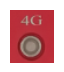

Quick Start¶
Contents
Note: if the figures are blur, click on the figure to see the clearer version
INS2000 Introduction¶
Aceinna INS2000 Receiver outline drawing¶
{kind=link}
where
{kind=link}
{kind=link}
Front panel¶
Interface |
Description |
Pin function |
10-pin MGG connector |
USB, CAN, COM3 |
Refer to the table below |
12-pin MGG connector |
Ethernet port, PPS, COM2, power interface |
Refer to the table below |
10-pin MGG connector pin function
Number |
Name |
Function |
1 |
CAN_L/422_TX- |
Bus low/422 send negative |
2 |
CAN_H/422_TX+ |
Bus high/422 sending positive |
3 |
GND |
Ground |
4 |
USB_VBUS |
Bus powered |
5 |
USB_ID |
Determine the master and slave device |
6 |
GND |
Ground |
7 |
USB_D+ |
Data positive |
8 |
USB_D- |
Data negative |
9 |
TXD3/422_RX- |
Send data/422 receive negative |
10 |
RXD3/422_RX+ |
Receive data/422 receive positive |
12-pin MGG connector pin function
Number |
Name |
Funtion |
1 |
GND |
Ground |
2 |
N/A |
Keep |
3 |
GND |
Ground |
4 |
ETH_TX+ |
Ethernet send positive |
5 |
ETH_TX- |
Ethernet send negative |
6 |
GND |
Ground |
7 |
ETH_RX- |
Ethernet receive negative |
8 |
ETH_RX+ |
Ethernet receiving positive |
9 |
PPS |
Second pulse |
10 |
12V+ |
12V power input (input voltage 9-36VDC) |
11 |
RXD2 |
COM2 receive data |
12 |
TXD2 |
COM2 send data |
Back panel¶
Interface |
State |
Description |
ANT1 |
Main antenna |
Main antenna when built-in dual antenna board. |
ANT2 |
From the antenna |
When the dual antenna board is built-in, it is the slave antenna. |
4G |
4G signal antenna |
4G signal antenna. |
SIM |
SIM card slot |
SIM now supports North American and Mainland versions. If you need support from other countries, please contact the Aceinna support team for customized production. |
Indicator Satus¶
Indicator |
Status |
Description |
Satellite indicator |
Display the receiver accepts satellites:
1 No light: no satellite received
2 Flashing: fewer satellites have been tracked (<12)
3 Steady on: The number of tracked satellites is sufficient (>=12)
|
|
RTK indicator |
Display receiver positioning:
1 Breath (On 3s off 1s) The board is started, no RTCM data access
2 High frequency (25Hz) RTCM data access but no fixed solution or floating point solution
3 times high frequency (5Hz) to obtain floating point solution
4 Low frequency (1Hz) to obtain a fixed solution
|
|

|
4G signal light |
Show receiver 4G signal condition:
1 Flashing slowly (200ms High / 1800ms Low) Network search
2 Slow flashing (1800ms High / 200ms Low) invalid
3 Fast flashing (125ms High / 125ms Low) Data is being transmitted
4 Always on Busy
|
Power Indicator |
Always on, power on
|
Quick Setup and Usage¶
Prerequisites¶
Equipment list
Name |
Quantity |
Remarks |
FRII-D-Plus-INS receiver |
1 |
|
4G antenna |
1 |
|
GNSS antenna |
2 |
|
SIM card |
1 |
|
10-pin MGG connector |
1 |
USB, CAN, serial port 3 |
12-pin MGG connector |
1 |
Network port, PPS, serial port 2, power port |
GNSS antenna feeder |
2 |
|
Ethernet cable |
1 |
prepared by customer |
Serial line |
1 |
prepared by customer |
computer |
1 |
prepared by customer |
Hardware connection
1: Install the FRII-D-Plus-INS on the carrier (the advancing direction of the carrier is consistent with the direction of the receiver Y axis);
2: Install the FRII-D-Plus-INS receiver with a 4G antenna;
3: Install the FRII-D-Plus-INS receiver into the SIM card;
Note
When installing the SIM card, as shown in the figure, the notch is to the right and the chip is upward.
4: Connect the FRII-D-Plus-INS receiver to the GNSS antenna through the GNSS feeder (note that the antenna should be installed in an open and unobstructed place);
Note
When the dual antenna board is built-in, ANT1 is the master antenna and ANT2 is the slave antenna.
5: Install the FRII-D-Plus-INS data cable to the FRII-D-Plus-INS;
6: Connect the network port or serial port to the laptop;
7: Power supply 9-36V (12V recommended) (note that all hardware is successfully connected before powering on);
8: Perform integrated navigation configuration.
Connection example¶
Serial connection¶
Connect the computer with a serial cable and install the serial cable driver. After the driver is installed, the successful serial port recognition will be displayed in the computer’s device manager. as the picture shows:
After identification, you can use the serial port tool for configuration management. It is recommended to use the software developed by Aceinna that is specially used for the configuration of the board card receiver.
Usage Steps¶
Click the icon to enter the software.
There are two ways to enter the serial port.
1 Click the port connection (red box 1 in the figure above) to realize batch connection of multiple serial ports.
When the serial port baud rate is known, select the corresponding serial port baud rate, and when the baud rate is unknown, select automatic detection. The factory default serial port baud rate is 115200.
If the serial port is opened by other serial devices, the serial port will be grayed out and the “Occupied” column will prompt “Yes”.
2 Click Quick Connect (green box 2 in the figure above)
When the serial port baud rate is known, select the corresponding serial port baud rate, and when the baud rate is unknown, select automatic detection.
Enter the software interface as follows:
Automatically display the board status in the lower right corner after connection.
Contains board IP information, board model, firmware version, currently connected COM port, and baud rate.
Network port connection¶
1 Connect the computer with a network cable or ensure that the receiver and the computer are in the same local area network (connect to the same router). After the physical connection is normal, the receiver will automatically try to obtain an available IP. Customers can also input commands through the serial port to configure a fixed IP.
2 Use Monitor to detect the network device function, or use Monitor serial port IP detection function to obtain the board IP (third-party serial tools can view the IP by entering the NETCONFIG command in the serial port).
3 The following five methods can quickly enter the built-in network interface of the board, and experience the full graphical, zero-handed interaction mode.
(1): Enter the IP address in the browser (Chrome is recommended)
(2): Click the device name directly in the Monitor network device list
(3): Click the upper right corner on the main Monitor interface
(4): Use the shortcut key CTRL+ U in the main interface of Monitor
(5): Click the board IP in the status bar at the bottom left corner of Monitor
Note
The webpage will automatically switch to the local language according to the current computer system language, and now supports English and Chinese. Other languages can be customized, please contact Aceinna sales team if you need.
Enter the username and password by default: username: admin password: password
Note
The password can be modified after entering the webpage. If you forget the password, please contact Aceinna technical team.